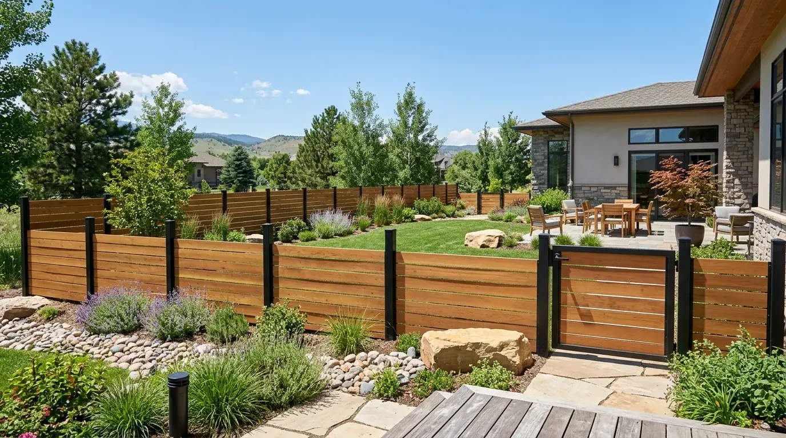

Cedar privacy
Solid privacy lines, cap rails, gates, and thoughtful transitions for backyards and property boundaries.
From cedar privacy fences to ornamental steel and custom gates, Waxwing Landscaping builds durable boundaries that suit the property and Colorado weather.

We help Boulder homeowners balance privacy, access, durability, neighborhood context, and the details that make a fence feel finished rather than temporary.
Solid privacy lines, cap rails, gates, and thoughtful transitions for backyards and property boundaries.
Open, welcoming fence styles that define space without closing it off.
Custom gates, hardware updates, post repairs, and fixes for fences that have shifted over time.
Send us the basics and we’ll help you plan the right fence for your property.
Start your project